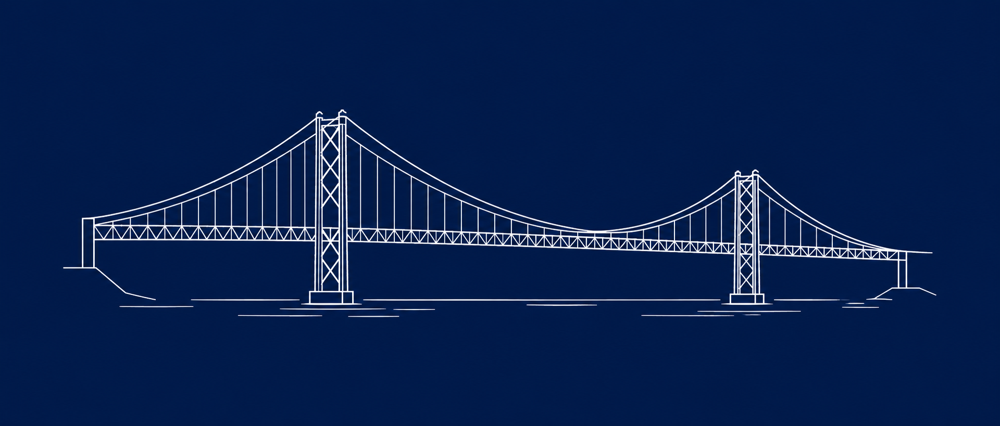

Ponte DigitalA Ponte Digital agrega recursos de apoio social no distrito de Lisboa — alimentação, saúde, emprego e muito mais — numa plataforma gratuita, simples e geolocalizada.
Permite o acesso à localização ou introduz a tua morada. A plataforma encontra os recursos mais próximos de ti.
Alimentação, saúde, emprego, apoio jurídico, educação — filtra por categoria, horário e distância.
Cada recurso tem contacto telefónico, morada e horário verificados. Sem intermediários, sem burocracia.
A fase piloto cobre todo o distrito de Lisboa. Cada município tem os seus recursos catalogados e verificados pela equipa Ponte Digital.
Se és uma IPSS, câmara municipal, associação ou outra organização de apoio social, podes registar e gerir os teus recursos directamente na plataforma.
Horários, contactos e serviços sempre actualizados — sem depender de ninguém.
Quantas pessoas consultaram o teu perfil e que serviços procuram mais.
Integra os teus dados com o teu próprio website via API REST gratuita.